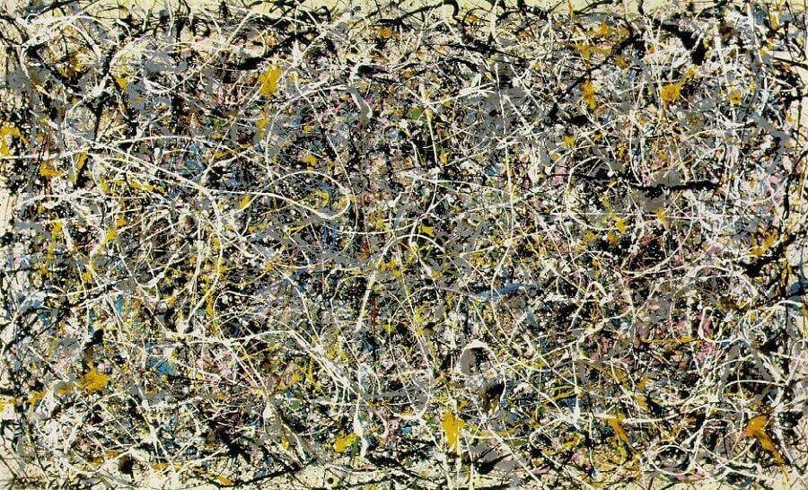
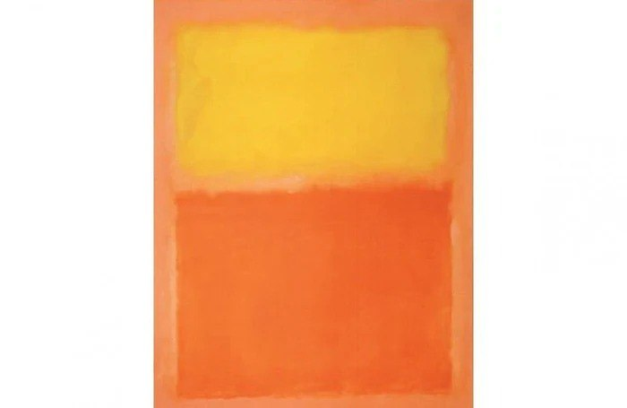
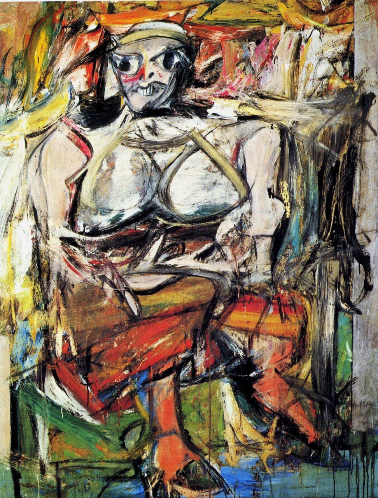
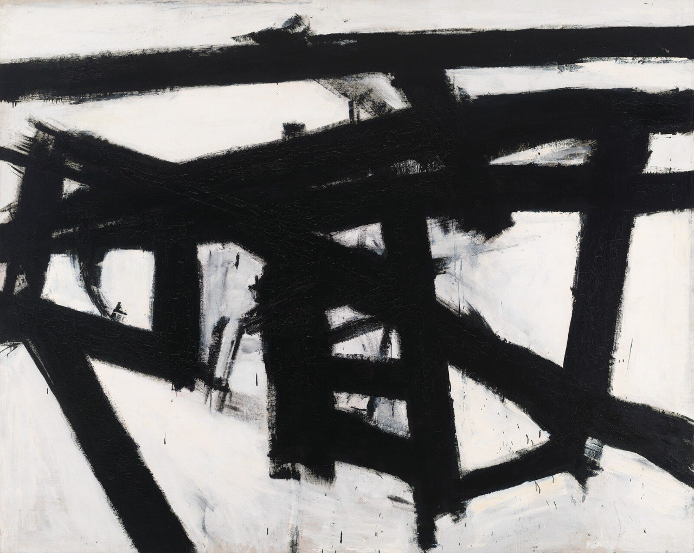
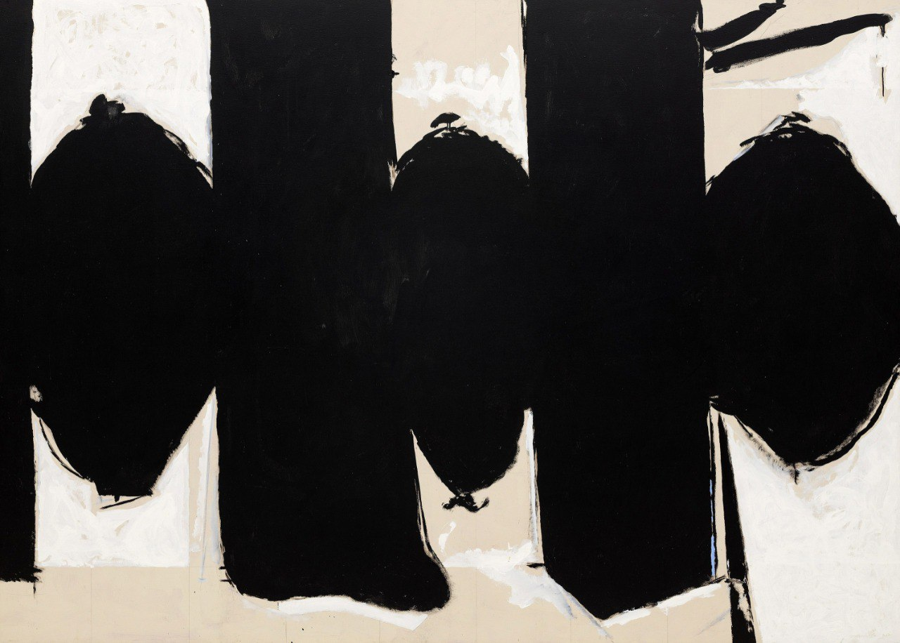
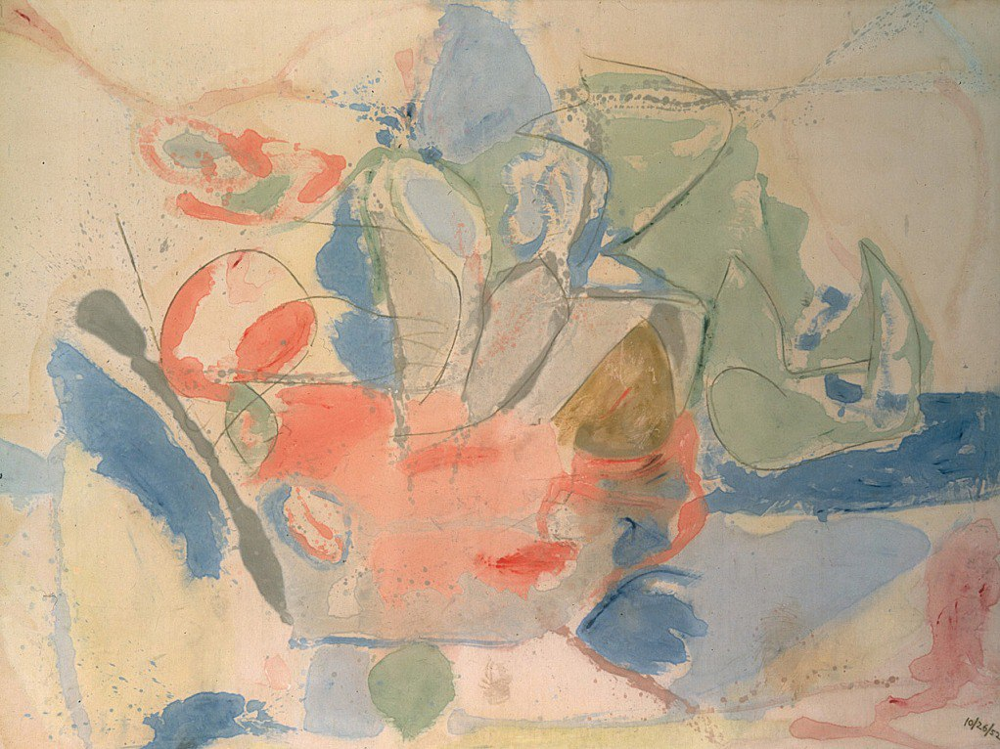
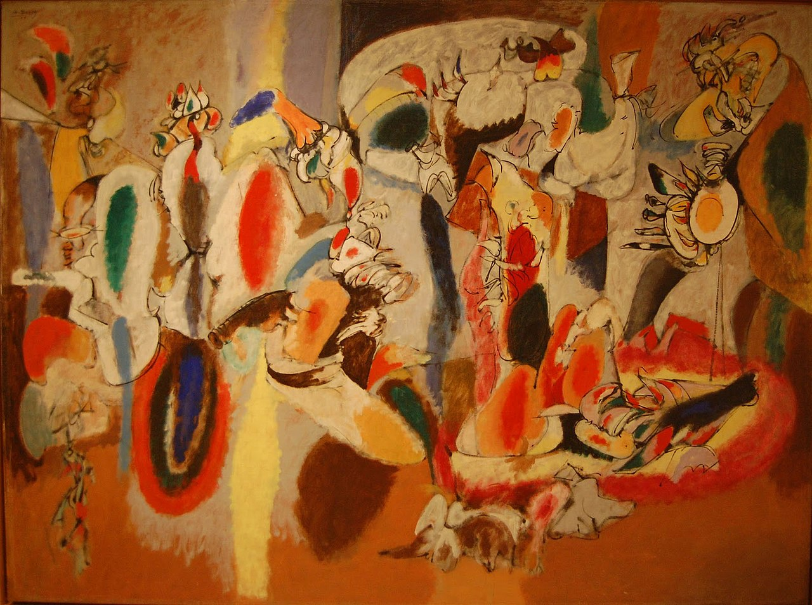
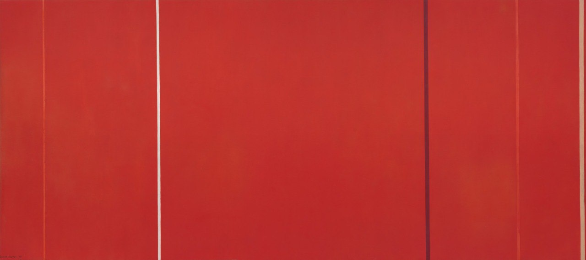
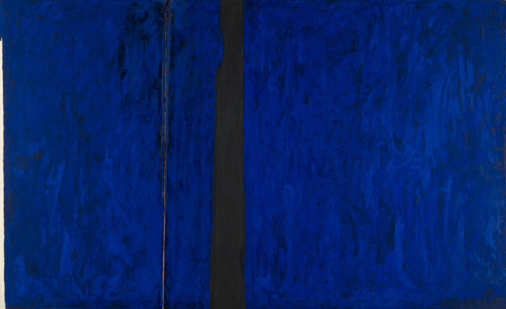
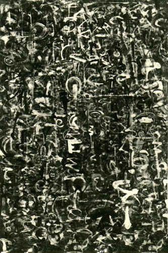

Meesterwerk: Number 1
Jackson Pollock, 1950

⚜️ UITGEBREIDE STIJLFIGUREN
🔥 ACTIE SCHILDEREN
De beweging is de kunst: Pollock goot, spatte, danste rond zijn doek. Het schilderen werd performance. Het proces belangrijker dan het resultaat.
Groot formaat: Doeken van meters breed - de kijker moet erin stappen, erdoorheen worden opgeslokt.
🔥 COLOR FIELD
Velden van kleur: Rothko's zwevende rechthoeken, Newman's "zips". Geen beeld, alleen kleur die ademt, die emotie wordt.
Contemplatief: Deze werken vragen om tijd, om stilte. Ze zijn bijna religieus - een ervaring van transcendente stilte.
🔥 AUTOMATISME
Vanuit het onderbewuste: Overgenomen van de Surrealisten. De hand beweegt zonder denken. Het ego moet wijken.
Spontaniteit: Geen voorbereiding, geen schets. Het moment is alles. Dit is existentialisme als schilderkunst.
🔥 EMOTIONELE INTENSITEIT
Pure emotie: Dit is niet "over" iets - het ís iets. De pijn, de woede, de extase van de schilder zit in de verf.
Amerikaans: Groots, meeslepend, megalomaan. Na WOII wilde Amerika culturele dominantie. Dit was hun antwoord op het Europese modernisme.
🎨 MEESTERWERKEN - GEDETAILLEERDE ANALYSE
1. "Number 1 (Lavender Mist)" (1950) — Jackson Pollock
National Gallery of Art, Washington · 221 × 300 cm · Olieverf, emaille, aluminium op doek
Achtergrond: Pollock's meesterwerk - het summum van zijn "drip" periode. Geschilderd op de vloer van zijn schuur, waarbij hij er rond danste. De titel "Lavender Mist" was een toevoeging van een criticus; Pollock noemde het gewoon "Number 1".
🔍 STIJLANALYSE
All-over compositie: Geen centrum, geen rand. Het doek is één veld van energie. Het oog wordt niet geleid maar moet zelf zijn weg vinden.
Spattechniek: Pollock gebruikte stokken, kwasten, zijn handen. De verf viel, werd gegooid, werd gedanst. Het doek registreert de beweging - het is actie gevangen in materie.
Kleur: Zachte pastels (vandaar "lavender") gemengd met zwart, wit, metaal. Het is energiek maar niet agressief - een dans, geen strijd.
Schaal: Bijna 3 meter breed. Je wordt erdoor omarmd, overspoeld. Het is een ervaring, geen afbeelding. Pollock wilde dat de kijker erin "liep".
2. "Oranje en Geel" (1956) — Mark Rothko
Albright-Knox Art Gallery, Buffalo · 231 × 181 cm · Olieverf op doek

Achtergrond: Rothko's klassieke "color field" periode. Twee grote, zwevende rechthoeken van warme kleur. Geschilderd in zijn piekperiode - hij had nog geen last van depressie die later zou leiden tot zijn zelfmoord.
🔍 STIJLANALYSE
Zwevende vormen: De rechthoeken lijken te drijven, te ademen. Ze hebben geen harde rand - de kleur vervaagt naar de achtergrond. Het is immaterieel, spiritueel.
Kleuremotionaliteit: Oranje en geel zijn warm, energiek, optimistisch. Rothko gebruikte kleur als taal - deze combinatie spreekt van vreugde, van levenslust.
Schokkerig oppervlak: Als je dichtbij staat, zie je de verschillende lagen verf, de penseelstreken. Het is handwerk, arbeid. Maar vanaf afstand verdwijnt dit - alleen kleur overblijft.
Contemplatie: Rothko wilde dat je lang voor zijn werk stond. Het is geen "kijk en loop door" kunst. Het vraagt tijd, stilte, meditatie. Het is bijna een religieuze ervaring.
3. "Vrouw I" (1950-1952) — Willem de Kooning
MoMA, New York · 193 × 147 cm · Olieverf op doek

Achtergrond: De Kooning werkte twee jaar aan deze serie. Het is zijn meest controversiële werk - een vrouw die lijkt opgevreten door de verf, agressief, seksueel, gewelddadig. Het verdeelde de kunstwereld.
🔍 STIJLANALYSE
Figuratief abstract: Je ziet een vrouw - borsten, ogen, tanden - maar ze is verwrongen, versplinterd. De Kooning balanceert op de grens van herkenbaarheid.
Geweld: De penseelstreken zijn agressief, haastig. De vrouw lijkt aangevallen door de verf zelf. Het is een complexe mix van begeerte en angst.
Palet: Felle kleuren - roze, geel, blauw - tegen groen en zwart. Het is bijna grotesk, carnavalesk. De kitsch en het sublieme botsen.
Vrouwenbeeld: Feministen hebben dit werk bekritiseerd als vrouwenvijandig. De Kooning zei: "Ik schilder vrouwen omdat ik er niet omheen kan." Het is obsessie, niet liefde.
4. "Mahoning" (1956) — Franz Kline
Whitney Museum, New York · 204 × 255 cm · Olieverf op doek

Achtergrond: Kline's zwart-wit meesterwerk - dikke, architectonische penseelstreken. Geen kleur, alleen contrast. Het is industrieel, stedelijk, krachtig.
🔍 STIJLANALYSE
Zwart-wit: Geen afleiding door kleur. Alles is vorm, structuur, energie. Het is kalligrafie op gigantische schaal.
Architectuur: De lijnen lijken op bruggen, machines, stedelijke landschappen. Kline's achtergrond als illustrator van industrie is zichtbaar.
Snelheid: De streken zijn snel, direct, zonder correctie. Een moment van actie, gevangen. Het is Abstract Expressionisme in zuiverste vorm.
Negatief: Het witte wordt even belangrijk als het zwarte. De leegte is vol, de stilte spreekt. Dit is ruimte als materie.
5. "Elegy to the Spanish Republic" (1958) — Robert Motherwell
MoMA, New York · 176 × 274 cm · Olieverf op doek

Achtergrond: Motherwell schilderde meer dan 150 "Elegies" in zijn leven. Ze zijn abstracte monumenten voor de verloren Spaanse Republiek (1936-39). Politiek zonder propaganda.
🔍 STIJLANALYSE
Vorm: Ovale vormen tussen verticale strepen - als monumenten tussen zuilen. Het is begrafenis, herdachting, rouw.
Kleur: Zwart, wit, grijs, bruin - sombere kleuren. Maar ook felle accenten van rood of oker. Er is leven in de dood.
Herhaling: De serie van 150+ werken is een obsessie. Elk is anders, maar herkenbaar. Het is een levenslang rouwproces.
Intellect: Motherwell was de meest literaire van de Abstract Expressionisten. Dit werk refereert aan geschiedenis, poëzie, politiek - maar blijft abstract.
6. "Mountains and Sea" (1952) — Helen Frankenthaler
National Gallery of Art, Washington · 220 × 298 cm · Olieverf op ongeprepareerd doek

Achtergrond: Frankenthaler's doorbraak - ze goot verf direct op het ongeprepareerde doek. De "soak-stain" techniek. Color Field schilderkunst wordt geboren.
🔍 STIJLANALYSE
Stain technique: De verf dringt in het doek, wordt één met de stof. Geen lagen, geen textuur - alleen kleur die ademt.
Landschap: De titel verwijst naar een landschap, maar het beeld is abstract. Toch: blauw als water, groen als land, licht als lucht. Het landschap is onttrokken.
Air: De kleuren zweven, drijven. Er is geen zwaartekracht. Het is licht, etherisch, bijna hemels. Dit is het tegenovergestelde van het zware Abstract Expressionisme.
Vrouw in Abstract: Frankenthaler was een van de weinige vrouwen in deze mannenwereld. Haar werk is zachter, vloeiender - maar even radicaal.
7. "The Liver is the Cock's Comb" (1944) — Arshile Gorky
Albright-Knox Art Gallery, Buffalo · 186 × 249 cm · Olieverf op doek

Achtergrond: Gorky's meest complexe werk - de titel is een Armeense uitdrukking. Het is biografisch: de Holocaust, de vlucht, het verlies. Abstractie als traumaverwerking.
🔍 STIJLANALYSE
Surrealisme: Gorky was beïnvloed door de Europese Surrealisten die naar NY vluchtten. De vormen zijn organisch, biomorph - lijken op lichaamsdelen, planten, dromen.
Kleur: Felle kleuren - rood, geel, blauw - tegen een chaotische achtergrond. Het is vreugde en pijn tegelijk.
Herinnering: Het landschap van Armeense, het verleden dat verloren is. Gorky schildert wat niet meer bestaat - abstractie als nostalgie.
Brug: Gorky staat tussen Surrealisme en Abstract Expressionisme. Zijn werk is de overgang - de oude wereld ontmoet de nieuwe.
8. "Vir Heroicus Sublimis" (1950-51) — Barnett Newman
MoMA, New York · 242 × 541 cm · Olieverf op doek

🔍 STIJLANALYSE
De Zip: Die ene lijn verdeelt het doek. Het is een teken, een zuil, een mens. Newman zag het als een man die alleen staat tegenover het sublieme.
Rood: Het is geen warm rood, maar een architectonisch rood. Het is ruimte, niet emotie. Newman wilde het absolute bereiken.
Schaal: Meer dan 5 meter breed! Je moet erin stappen, erdoorheen lopen. Het is een ervaring van ruimte, van tijd.
Sublim: Burke's theorie van het sublieme - angst en verwondering. Newman creëert dit met alleen kleur en lijn. Het is spiritualiteit zonder religie.
9. "PH-247" (1951) — Clyfford Still
Privécollectie · 236 × 208 cm · Olieverf op doek

Achtergrond: Still was de meest geheime van de Abstract Expressionisten. Hij weigerde de meeste tentoonstellingen. Zijn werk is intens, bijna angstaanjagend.
🔍 STIJLANALYSE
Kleurvelden: Grote vlakken van onnatuurlijke kleuren - geel, oranje, zwart. Ze botsen, snijden, vervloeien. Het is geen harmonie, maar strijd.
Tekstuur: Dikke verf, krassen, scheuren. Het oppervlak is als verbrande aarde. Still schilderde met woede, met noodzaak.
Geheim: Still weigerde zijn werken te verkopen aan mensen die hij niet respecteerde. Zijn kunst was heilig, niet commercieel.
Menselijk: De titels (PH-247) zijn anoniem, maar het werk is extreem persoonlijk. Het is een verhaal zonder woorden.
10. "White Writing" (1944) — Mark Tobey
Seattle Art Museum · 61 × 51 cm · Caseïne op papier

Achtergrond: Tobey's "white writing" - witte lijnen op donkere achtergrond, geïnspireerd door kalligrafie en het Bahá'í geloof. Het is meditatief, spiritueel, Oosters.
🔍 STIJLANALYSE
All-over: Geen centrum, geen compositie. Het hele oppervlak is gelijk. Het is netwerk, web, energie.
Kalligrafie: De witte lijnen zijn als Chinese karakters - beweging, adem, leven. Maar ze zijn abstract, leeg. Vorm zonder inhoud.
Spiritualiteit: Tobey was Bahá'í - zijn werk is gebed, meditatie. Het is stilte in beweging. Dit is Abstract Expressionisme als mystiek.
Schoksgewijs: Kleine formaat (t.o.v. Pollock), delicate techniek. Het is intiem, niet monumentaal. De kijker moet dichtbij komen.
📚 TIJDSGEEST CONTEXT (1940-1960)
🌍 POLITIEK PERSPECTIEF
Het Abstract Expressionisme (1940-1960) ontwikkelde zich in een politieke context die werd gekenmerkt door de Tweede Wereldoorlog, de Koude Oorlog en de opkomst van de Verenigde Staten als supermacht. De politieke structuur werd gedomineerd door de strijd tegen het fascisme tijdens de oorlog en de strijd tegen het communisme tijdens de Koude Oorlog. Het Abstract Expressionisme ontstond in New York, dat tijdens en na de oorlog het centrum van de westerse kunstwereld werd, aangezien Parijs door de oorlog zijn dominante positie had verloren. Vele Europese kunstenaars, waaronder surrealisten als André Breton, Max Ernst en Marcel Duchamp, vluchtten naar New York en beïnvloedden de jonge Amerikaanse kunstenaars met hun ideeën over het onbewuste, automatische technieken en psychologische expressie.
De sociale dynamiek werd gekenmerkt door een revolte tegen de tradities van de Europese kunst, maar ook tegen de Amerikaanse social realism van de jaren dertig, die door velen werd gezien als politiek geladen en esthetisch conservatief. De abstract expressionisten, waaronder Jackson Pollock, Willem de Kooning, Mark Rothko, Barnett Newman en Franz Kline, zochten naar een nieuwe vorm van expressie die zowel universeel als persoonlijk was. Zij werden beïnvloed door existentialistische filosofie, jungiaanse psychologie en surrealisme, maar ontwikkelden een eigen visuele taal die werd gekenmerkt door grote formaten, spontane technieken en een nadruk op het schilderen als fysieke handeling. De New York School, zoals de beweging ook werd genoemd, was expliciet individualistisch: elke kunstenaar ontwikkelde een eigen stijl, van Pollock's "drip paintings" tot Rothko's kleurvlakken, van De Kooning's gewelddadige "Women" tot Kline's monumentale zwarte vormen.
De politieke context van de Koude Oorlog was cruciaal voor de receptie van het Abstract Expressionisme. In de jaren vijftig promootte de Amerikaanse overheid, met name door het Congress for Cultural Freedom (dat later werd onthuld als een CIA-frontorganisatie), het Abstract Expressionisme als een manifestatie van Amerikaanse vrijheid en individualisme, in contrast met het socialistisch realisme van de Sovjet-Unie. Critici als Clement Greenberg en Harold Rosenberg, die nauwe banden hadden met de Amerikaanse intellectuele elite, presenteerden het Abstract Expressionisme als de culminatie van de modernistische traditie en als een teken van Amerikaanse culturele suprematie. Tegelijkertijd waren velen van de abstract expressionisten politiek links - Pollock was in de jaren dertig lid van de Communistische Partij geweest - en zagen zichzelf niet als instrumenten van de Amerikaanse propaganda.
De verbinding tussen politiek en artistieke stijl was complex en indirect. Het Abstract Expressionisme was niet expliciet politiek: de kunstenaars schilderden geen politieke boodschappen, maar abstracte composities die werden gezien als expressies van het onbewuste, het existentieel engagement of het sublime. De nadruk op individualiteit, spontaniteit en persoonlijke expressie paste echter perfect in het Amerikaanse ideologische kader van vrijheid, individualisme en anti-totalitarisme. De enorme schaal van de schilderijen, de fysieke intensiteit van het schilderen, de afwezigheid van figuratie - dit alles verbeeldde een wereld waarin het individu centraal stond, vrij van de ketenen van traditie, politiek en maatschappij. Het Abstract Expressionisme was daarmee tegelijkertijd een revolte tegen de gevestigde orde en een instrument van de Amerikaanse culturele hegemonie tijdens de Koude Oorlog.
Bronnen: Wikipedia - Abstract expressionism, Jackson Pollock, Willem de Kooning, Mark Rothko, New York School, Cold War, CIA, Clement Greenberg.
📖 LITERAIR PERSPECTIEF
De opkomst van de abstracte kunst aan het begin van de twintigste eeuw weerspiegelde een fundamentele verschuiving in de literaire benadering van werkelijkheidsweergave. Waar de negentiende-eeuwse literatuur zich had gericht op realisme en naturalisme – denk aan de gedetailleerde maatschappijbeschrijvingen van Émile Zola (1840-1902) en Honoré de Balzac (1799-1850) – zochten schrijvers en dichters in de vroege twintigste eeuw naar nieuwe manieren om de innerlijke ervaring uit te drukken die verder gingen dan puur beschrijvende taal.
Wassily Kandinsky (1866-1944), zelf werkzaam als kunstenaar en theoricus, publiceerde in 1911 zijn invloedrijke werk 'Über das Geistige in der Kunst', waarin hij parallellen trok tussen abstracte schilderkunst en de muziek. Deze analogie vond weerklank bij literaire vernieuwers zoals de Russische symbolist Aleksandr Blok (1880-1921) en de Italiaanse futurist Filippo Tommaso Marinetti (1876-1944), die in hun werk trachtten de traditionele grenzen tussen woord en beeld te doorbreken.
De literaire beweging die het sterkst parallel liep met de abstracte kunst was het expressionisme, dat in Duitsland bloeide tussen 1910 en 1925. Dichters als Georg Trakl (1887-1914) en Gottfried Benn (1886-1956) gebruikten fragmentarische beelden en verstoord ritme om psychische toestanden weer te geven, vergelijkbaar met hoe Kandinsky in schilderijen als 'Compositie VII' (1913) puur kleur en vorm gebruikte om spirituele ervaringen uit te drukken. De Weense schrijver Hugo von Hofmannsthal (1874-1929) beschreef in zijn beroemde 'Chandos-brief' (1902) het verlies van coherent taalgebruik, een thema dat direct resoneerde met de abstracte kunstenaars die de figuratie achter zich lieten.
In Frankrijk ontwikkelden de dadaïsten en surrealisten een nog radicalere benadering van abstractie in taal. Tristan Tzara (1896-1963) creëerde gedichten door willekeurig woorden uit een hoed te trekken, terwijl André Breton (1896-1966) in zijn 'Manifeste du surréalisme' (1924) pleitte voor 'écriture automatique' – automatisch schrijven dat de rationele controle zou omzeilen. Deze technieken vertoonden sterke overeenkomsten met de 'action painting' van Jackson Pollock (1912-1956) en de abstract expressionisten die decennia later in New York zouden werken.
De Nederlandse schrijver en kunstenaar Theo van Doesburg (1883-1931) bracht de abstracte kunst en literatuur direct samen in de beweging De Stijl, opgericht in 1917. Zijn manifesten en gedichten benadrukten de zuivere expressie van universele harmonie door reductie tot essentieële elementen, een principe dat Piet Mondriaan (1872-1944) in zijn geometrische composities visueel vertaalde. Van Doesburgs 'Klassiek-barok-cyclisch' (1920) toont hoe literaire abstractie kon worden bereikt door ritmische herhaling en structurele symmetrie.
De Amerikaanse dichter Ezra Pound (1885-1972) introduceerde met het imagisme rond 1912 een literaire benadering die parallellen vertoonde met abstracte kunst: het direct presenteren van beelden zonder tussenkomst van beschrijvende taal. Zijn beroemde gedicht 'In a Station of the Metro' (1913) – slechts twee regels – demonstreert hoe maximale expressie bereikt kon worden met minimale middelen, vergelijkbaar met hoe Kazimir Malevitsj (1879-1935) in 'Zwart Vierkant' (1915) tot de essentie van schilderkunst reduceerde. De latere 'Language poets' in de jaren zeventig, zoals Lyn Hejinian (1941-2024) en Ron Silliman (1946), zouden deze abstractie nog verder doorvoeren door de betekenis van taal zelf te deconstrueren.
🧠 PSYCHOLOGISCH PERSPECTIEF
De abstracte kunst van de vroege twintigste eeuw vertoonde een fundamentele verbinding met de opkomende psychologie van het onbewuste, zoals deze werd ontwikkeld door pioniers als Sigmund Freud (1856-1939) en Carl Gustav Jung (1875-1961). Waar de figuratieve kunst zich richtte op de externe werkelijkheid, zochten abstracte kunstenaars naar visuele talen voor innerlijke, psychische ervaringen die zich aan de rationele controle onttrokken.
Wassily Kandinsky (1866-1944), die in 'Über das Geistige in der Kunst' (1911) schreef over de 'innerlijke noodzakelijkheid' van kleur en vorm, werd beïnvloed door theosofische en psychologische ideeën die de emotionele resonantie van visuele elementen centraal stelden. Zijn 'Compositie VII' (1913) kan worden begrepen als een poging om psychische toestanden direct weer te geven zonder de tussenkomst van figuratie. Kandinsky's synesthesie – het ervaren van kleuren als klanken – vertoonde parallellen met wat Jung 'archetypische ervaringen' zou noemen: universele psychische patronen die cultuuroverschrijdend zijn.
Kazimir Malevitsj (1879-1935) bereikte in 'Zwart Vierkant' (1915) een极端e reductie die psychologisch kan worden geïnterpreteerd als het leegmaken van bewuste inhoud om ruimte te maken voor het onzegbare. Zijn 'suprematisme' streefde naar een 'nulgraad' van de schilderkunst, wat Freud zou hebben herkend als een vorm van 'oceanisch gevoel' – de ervaring van grenzeloosheid die hij beschreef in 'Das Unbehagen in der Kultur' (1930). Malevitsj's latere psychose en institutionalisatie in 1935 tonen aan hoezeer abstracte kunst psychische grenzen kon verkennen.
Piet Mondriaan (1872-1944) ontwikkelde zijn 'neoplastiek' vanuit een zoektocht naar universele harmonie die sterk leunde op theosofische en psychologische concepten. Zijn geometrische composities met primaire kleuren kunnen worden begrepen als visuele manifestaties van wat Jung 'het collectieve onbewuste' noemde: universele structuren die onder alle culturele variatie liggen. Mondriaans rigoureuze zelfdiscipline en zijn behoefte aan orde vertoonden trekken van wat psychologie 'sublimatie' noemt – het omzetten van psychische energie in creatieve productie.
De abstract expressionisten van de naoorlogse periode, werkzaam in New York, benaderden de kunst expliciet vanuit een psychologisch perspectief. Jackson Pollock (1912-1956), die in psychoanalyse ging bij Jungiaanse analisten, creëerde zijn 'drip paintings' in een staat van psychische absorptie die hij 'action painting' noemde. Pollocks 'Autumn Rhythm (Number 30)' (1950) ontstond door fysieke bewegingen die directe expressie waren van psychische energie, een proces dat sterke overeenkomsten vertoonde met de 'automatische' technieken van de surrealisten.
Mark Rothko (1903-1970) stelde dat zijn kleurvlakken 'tragedie, extase en doemsdag' moesten oproepen, een bewering die direct aansloot bij de existentiële psychologie van denkers als Ludwig Binswanger (1881-1966) en Medard Boss (1903-1990). Rothko's late 'Seagram Murals' (1958-1959) en de 'Rothko Chapel' (1971) in Houston functioneren als psychologische ruimtes die de toeschouwer tot introspectie dwingen. Zijn zelfmoord in 1970 toont de psychische belasting die het verkennen van depressieve en existentiële thema's kon betekenen.
Willem de Kooning (1904-1997) combineerde abstractie met figuurlijke elementen in werken als 'Woman I' (1950-1952), die psychische conflicten tussen mannenaar en vrouwbeeld thematiseerden. Zijn latere dementie in de jaren tachtig bracht een radicale verandering in zijn werk teweeg: de schilderijen werden zachter, abstracter, wat psychologen zouden kunnen interpreteren als een lossen van bewuste controle en het opkomen van meer primaire processen.
⚙️ HISTORISCH PERSPECTIEF
De abstracte kunst ontstond in een periode van radicale technologische en maatschappelijke veranderingen die de fundamenten van de westerse beschaving op hun grondvesten deden schudden. Aan het begin van de twintigste eeuw onderging de wereld een transformatie zonder weerga: de tweede industriële revolutie had de Europese steden veranderd in pulserende centra van stoom, staal en elektriciteit. Tussen 1880 en 1914 groeide de urbanisatie exponentieel, met steden als Parijs, Berlijn, Moskou en Wenen die uitdijden tot metropolen met miljoenen inwoners. Deze massale concentratie van menselijke activiteit creëerde zowel een gevoel van opwinding als van vervreemding, wat direct weerspiegeld werd in de kunsten. De uitvinding van de automobiel door Karl Benz in 1886, de eerste vlucht van de gebroeders Wright in 1903, en de introductie van de radio door Guglielmo Marconi rond 1895 veranderden fundamenteel hoe mensen tijd, ruimte en communicatie ervoeren. Kunstenaars als Wassily Kandinsky, Piet Mondriaan en Kazimir Malevich reageerden op deze nieuwe realiteit door de representatie van de zichtbare wereld radicaal te verwerpen. De fotografie, die sinds de uitvinding door Louis Daguerre in 1839 steeds toegankelijker werd, had de traditionele rol van de schilderkunst als middel voor realistische weergave overbodig gemaakt. Dit dwong kunstenaars om nieuwe wegen te zoeken. De economische context was complex: terwijl de industrialisatie ongeëvenaarde welvaart bracht voor een kleine elite, leefde het merendeel van de stedelijke bevolking onder erbarmelijke omstandigheden in overbevolkte wijken. Deze sociale tegenstellingen voedden revolutionaire bewegingen en politieke instabiliteit. De Russische Revolutie van 1905 en de opkomende socialistische bewegingen in heel Europa creëerden een klimaat van zowel hoop als angst. De Eerste Wereldoorlog van 1914-1918 zou uiteindelijk de oude orde definitief vernietigen en de weg vrijmaken voor abstracte kunst als universele taal van een nieuwe tijd. Kunstenaars zochten naar spiritualiteit en essentie in een wereld die door materialisme en mechanisering werd gedomineerd. De theosofie, populair gemaakt door Helena Blavatsky, en de antroposofie van Rudolf Steiner beïnvloedden kunstenaars die geloofden dat abstracte vormen directe toegang boden tot hogere spirituele waarheden. De abstractie was dus niet slechts een esthetische keuze, maar een filosofische en spirituele reactie op een wereld in crisis en transformatie. De wetenschappelijke ontdekkingen van deze periode, waaronder de relativiteitstheorie van Albert Einstein uit 1905 en de kwantummechanica die in de jaren 1910 ontwikkelde, ondermijnden het idee van een objectieve, waarneembare realiteit. Deze intellectuele revolutie gaf kunstenaars de vrijheid om de zichtbare wereld los te laten en te zoeken naar nieuwe visuele talen die de innerlijke ervaring en de structuur van de werkelijkheid zelf konden uitdrukken. Het expressionisme, kubisme en futurisme fungeerden als tussenstations op weg naar volledige abstractie, waarbij kunstenaars steeds verder gingen in het loslaten van figuratieve elementen tot alleen kleur, vorm en lijn overbleven.
🎭 FILOSOFISCH PERSPECTIEF
De opkomst van de abstracte kunst aan het begin van de twintigste eeuw weerspiegelde een fundamentele crisis in de westerse filosofie, waarbij de traditionele metafysische zekerheden werden ter discussie gesteld. De Duitse filosoof Wilhelm Dilthey (1833-1911) had in zijn late werk onderscheid gemaakt tussen 'Naturwissenschaften' en 'Geisteswissenschaften', waarbij hij benadrukte dat de menselijke ervaring niet kon worden gereduceerd tot natuurwetenschappelijke wetten. Deze notie vond directe weerklank bij abstracte kunstenaars die de externe werkelijkheid loslieten om de 'innerlijke noodzakelijkheid' te exploreren, zoals Wassily Kandinsky (1866-1944) het formuleerde in 'Über das Geistige in der Kunst' (1911).
Kandinsky was diep beïnvloed door de theosofische filosofie van Helena Blavatsky (1831-1891) en de antroposofie van Rudolf Steiner (1861-1925), die beide stelden dat de materiële wereld slechts een manifestatie was van diepere spirituele realiteiten. In 'Compositie VII' (1913) trachtte Kandinsky deze filosofische ideeën visueel te vertalen: de kleuren en vormen fungeerden als 'philosophische symbolen' die niet naar externe objecten verwezen, maar naar universele geestelijke principes. Deze benadering vertoonde sterke overeenkomsten met de fenomenologie van Edmund Husserl (1859-1938), die in 'Ideen zu einer reinen Phänomenologie' (1913) pleitte voor een 'terug naar de dingen zelf' – een terugkeer naar de directe ervaring die de abstracte kunstenaars nastreefden.
Piet Mondriaan (1872-1944) ontwikkelde zijn 'neoplastiek' vanuit een filosofische overtuiging die sterk leunde op de dialectiek van Georg Wilhelm Friedrich Hegel (1770-1831). In Hegeliaanse termen streefde Mondriaan naar een synthese van thesis (verticale lijnen) en antithesis (horizontale lijnen), resulterend in een harmonie die de 'absolute geest' benaderde. Zijn geschriften in 'De Nieuwe Beelding' (1917-1918) tonen een filosofische systematiek die parallellen vertoont met de logische analyse van Bertrand Russell (1872-1970) en Ludwig Wittgenstein (1889-1951) in de 'Principia Mathematica' (1910-1913): zowel Mondriaan als de logici zochten naar minimale elementen waaruit complexe systemen konden worden opgebouwd.
Kazimir Malevitsj (1879-1935) bereikte in 'Zwart Vierkant' (1915) een filosofische 'nulgraad' die vergelijkbaar was met wat Martin Heidegger (1889-1976) later 'das Nichts' zou noemen – het niets dat niet de loutere afwezigheid van zijn is, maar de conditie voor elke mogelijke betekenis. Malevitsj's 'suprematisme' stelde dat de kunst zich moest bevrijden van 'het juk van de objecten', een filosofische positie die aansloot bij de anti-representatietheorie van filosofen als Henri Bergson (1859-1941), die in 'L'Évolution créatrice' (1907) betoogde dat intuïtie superieur was aan intellectuele analyse.
De fenomenologie van Maurice Merleau-Ponty (1908-1961), geformuleerd in 'Phénoménologie de la perception' (1945), bood een filosofisch kader om de abstracte kunst te begrijpen. Merleau-Ponty benadrukte dat waarneming geen passieve registratie was van externe prikkels, maar een actieve constitutie van betekenis door het 'geïncarneerde subject'. Deze notie verklaring waarom abstracte kunst 'zinvol' kon zijn zonder figuratie: de toeschouwer constitueerde betekenis door zijn eigen perceptuele activiteit, niet door herkenning van externe objecten. Mark Rothko (1903-1970), wiens kleurvlakken de toeschouwer tot existentiële confrontatie dwongen, kan worden begrepen als een visuele vertaling van Merleau-Ponty's fenomenologie.
Theodor W. Adorno (1903-1969) analyseerde in 'Ästhetische Theorie' (1970) de abstracte kunst als een 'verzakelijking' die de subjectieve expressie maximaliseerde door zich te onttrekken aan de cultuurindustrie. Adorno's kritiek op de 'verzakelijkte' maatschappij vond een echo in de abstract expressionisten die, werkzaam in het naoorlogse New York, een 'autonome kunst' nastreefden die zich onttrok aan commerciële en politieke instrumentalisering. Adorno's stelling dat 'kunst het onzegbare zegt door te zwijgen' verklaring de strategie van kunstenaars als Barnett Newman (1905-1970) en Ad Reinhardt (1913-1967), wiens 'zwarte schilderijen' (1960-1966) de grenzen van schilderkunstige expressie verkenden.
Jean-François Lyotard (1924-1998) analyseerde in 'La Condition postmoderne' (1979) de abstracte kunst als een 'avant-garde' die de 'grote verhalen' van vooruitgang en verlossing ter discussie stelde. Lyotards concept van 'het onzegbare' – dat wat zich aan voorstelling onttrekt – vond directe weerklank bij abstracte kunstenaars die de grenzen van het representeerbare zochten. De latere abstractie van kunstenaars als Agnes Martin (1912-2004), wiens subtiele grid paintings naar transcendentie streefden zonder religieuze referenties, kan worden begrepen als een filosofische praktijk die het 'sublieme' in de Kantiaanse zin nastreefde: dat wat de verbeelding overschrijdt en het denken tot de grenzen van zijn vermogen dwingt.
📚 CONCLUSIE: DE AMERIKAANSE DROOM
Abstract Expressionisme leert ons:
- Dat groot kan: Grootschalig denken, grootschalig schilderen
- Dat het proces telt: De actie van het schilderen is even belangrijk als het resultaat
- Dat emotie abstract kan zijn: Je hoeft geen figuur te schilderen om gevoel over te brengen
- Dat kleur machtig is: Rothko bewijst dat twee kleurvlakken genoeg kunnen zijn
- Dat Amerika cultureel kon domineren: Dit was hun moment, hun statement
Abstract Expressionisme is de laatste grote kunstbeweging die geloofde in de mythe van de kunstenaar als held.